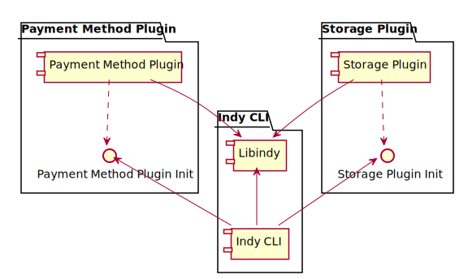

CLI plugins¶
This design proposes the way to support plugins in Indy CLI.
Goals and ideas¶
- Libindy now allows to plug 2 type of functionality for the moment:
- Custom wallet storage
- Custom payment methods
- To register plugins libindy provides API calls that allows to register C-handlers for each type of plugged operation
- In current vision libraries that implement libindy plugins should provide some kind of public “init” function that will call internally libindy API to register handlers. So registration of plugin is just calling of C function.
- “Init” function should have just one param. It is callback that returns libindy error code.
- CLI can provide command line option that will allow to point the name of plugin dynamic library and the name of “init” function. On start CLI will call dlopen (or LoadLibrary) with right options to perform names linking. CLI will lookup for init function by name and call it.
- Also we need to provide CLI command to load plugin similar way
Linking¶

Command line param to load plugins on start¶
indy-cli --plugins <lib-1-name>:<init-func-1-name>,...,<lib-n-name>:<init-func-n-name>
Example:
indy-cli --plugins libnullpay:nullpay_init,libstorage:storage_init
Command to load plugin¶
indy> load-plugin library=<library-name> initializer=<init-func-name>
Example:
indy> load-plugin library=libnullpay initializer=nullpay_init